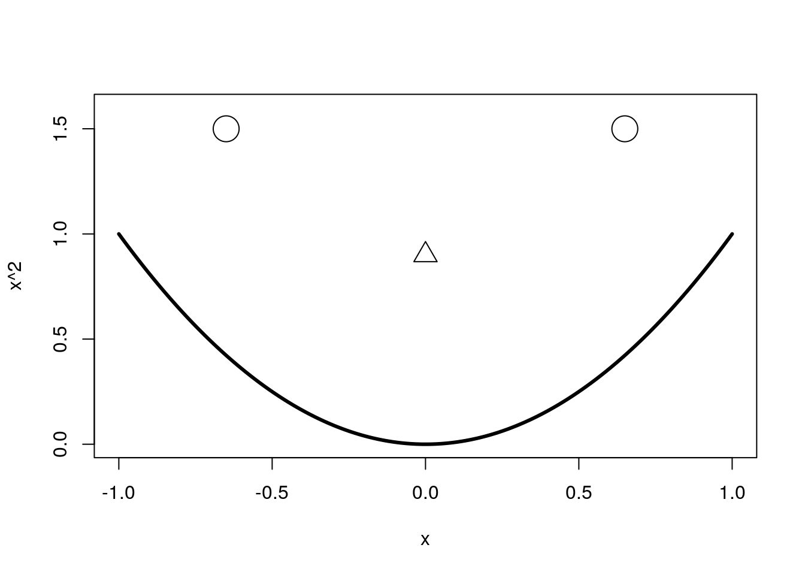

For today’s post, I’d like to continue on the R Markdown theme started in my last post, and give a brief introduction to authoring documents using R Markdown and Knitr. If you’re completely new to Knitr and R Markdown I recommend reading the “Back to basics” paragraph in my last post to get a feel for the context and purposes of these tools.
These tools fill essentially the same niche for the R community as ipython notebooks do in the python community. My experience with ipython notebooks is minimal relative to my markdown experience and so I don’t feel qualified to compare the two, but I will say that ipython notebooks aren’t the only way to share code and rationale all in one document.
My affection for R Markdown and Knitr is strong, but there were some growing pains. When I started learning R Markdown, I had a tiny bit of experience with Knitr already but nothing resembling expertise, the resultant challenge was having to learn both tools concurrently, flipping back and forth between documentation that, at the time, felt more like a technical showcase. I don’t want others to have to share that struggle, so here’s my attempt at streamlining the plunge into “reproducible research”1.
Before we jump in to authoring our first (second, thirtieth) document using R Markdown, I feel I need to pay homage to the materials I learned from. If a topic is not covered in this introduction you will (hopefully) be able to find it in one of these sources.
These three sources (plus lots of trial and error) are sufficient to learn how to produce high quality documents with R Markdown. Also I implore you to use R Studio when writing your documents. The people behind R Studio created R Markdown, and because of their deep interest in the format they have provided many conveniences you’d miss if you tried authoring from your text editor and command line. These instructions were written assuming you’re using R Studio, if not you will have to determine some of the housekeeping steps for yourself.
Alright! Now let’s get authoring! First thing you’re going to want to do is create a new file in R Studio. If you click the new file button, you’ll notice that there are options other than R Script for the type of file to create. Below the R Script option is the R Markdown option, choose that one. This gives you the option to give your document a title and your name and choose the output format for your document. By default the Knitr knits (creates the final document) to .html, but it can also create .pdf’s and .doc’s if you’d like. R Studio puts some demonstration markdown in the document, you can go ahead and erase that, we’ll be writing our document from scratch. Now save this document somewhere, by default the document knits to the same directory as the file. The file now exists as a .rmd, pretty easy to remember and easy to keep separate from your R scripts.
R Markdown supports a couple of different heading schemes, the two I use rely on the number sign, the equal sign, and the dash. To give your document a title try one of the following:
# My titleor
My title
=========Both work, but note, there can’t be a space between the beginning of the newline and the number sign or equal signs otherwise the special meaning of those characters is lost.
To add sub-headings, either use
## My sub-headingor
My sub-heading
---------------At first I tended to use the number sign method, but now I tend to use the underlining method. The advantage to the number sign method is that you can have greater than two heading levels (just keep adding number signs to represent deeper levels). I find I rarelly go deeper than two sub-headings, and the underlining method looks neater as you’re writing.
First thing to note about writing text paragraphs is that R Markdown does not honour your newline characters as you might imagine it would. Because scripting windows on differ in size, R Studio will auto-wrap long lines for you, and if you choose to manually break your lines it will ignore that when rendering the final document. To instruct R Markdown to honour a line break, either place two spaces at the end of the preceding line, or add a full empty line between the old and new paragraphs. Using more than one empty line to divide paragraphs when writing is perfectly acceptable and R Markdown will ignore additional newlines. This behaviour stems from markdown’s original mission: to produce documents that are readable as plain-text that produce well formatted documents when converted to other document types, so facillities exist to make plain-text look nicer (lots of stylistic white space).
So go ahead an write a little bit about what you’ve learned about R Markdown so far (or whatever you want), hit the knit HTML button in the top of the scripting window. Now have a look at your beautiful handiwork, pretty snazzy right? Once you’ve patted yourself on the back lets move on to the next step, adding some code!
R Markdown has two primary modes of displaying code, there is inline code and code chunks. Inline code is primarily for small snippets, like variable names and parameter assignments. To denote an inline code segment, surround it with backticks (`, not ’).
The more interesting way to display code are code chunks, these allow code, results, and figures to be presented together in text. In all honesty, if R Markdown was just a tool for making writing HTML a lot easier it probably wouldn’t have earned this post. Of course the markdown family is incredibly useful if you publish a lot of web content that you want to make available quickly, but the real beauty of R Markdown is its ability to display and execute code from a variety of different languages. Just last week I posted my adventure into adding ipython as an interpreter(engine) for Knitr, but you can include code from python, haskell, bash, c, and fortran just to name a few2,3.
To add a code “chunk” into a document, you create a fenced code block like so
```{r}
# My fantastic R code!
```
What R Markdown (and eventually Knitr) does with your code chunk is highly customizable. You can have code that is shown but isn’t executed, code that is executed but isn’t shown, code that has its results saved so that it doesn’t have to be recalculated if your change the document, and a myriad of other potential customizations. So I think now is as good a time as any to introduce chunk options.
One of the cryptic things I had to figure out when starting R Markdown is what do all of these chunk options do, and how to I use them. I’m going to cover five of the basic ones that will get a lot of use, and a few that may be useful more occaisonally.
eval: This option controls whether your carefully crafted code is executed while the document is being knit. Often I’m including demonstration code that doesn’t need to be run each time (or may not work out of context), so I’ll often set eval = FALSE, eval is TRUE by default.echo: This option controls whether to display the code, often I’ll have a set-up chunk at the beginning of the document to do things like set my working directory, load packages, and import data. These aren’t interesting to a reader so I set echo = FALSE, echo is TRUE by defaultresults: This option controls whether to output the results of running the code into the document. Sometimes hiding the results of executed code makes sense, I often use results = FALSE with echo = FALSE, when my set-up chunk has output.cache: This option allows Knitr to remember the results of executing a code chunk so that unless the code changes it doesn’t need to be re-run. This is useful when executing code that takes a while to run. R Markdown typically involves a lot of guess and check, so even a few minutes of execution time can make the authoring process unpleasant, for those code chunks set cache = TRUE, it is FALSE by default.engine: This option allows you to choose another language engine to execute the code, perfect for presenting or comparing another language in your document. Just set engine = "name_of_engine" in the code chunk.message,warning, and error: These options let you control whether Knitr should report messages, warnings, and errors in the document. Sometimes these are worth suppressing, by default they are shown (set to FALSE to suppress them).To set these options on a chunk-by-chunk basis, just include all your options in the curly braces at the top of the chunk like so
```{r, eval = FALSE, echo = TRUE}
#Some code to be shown but not run
```
If you find yourself using the exact same option in all of your code chunks, you can set document-wide defaults. These defaults will be overriden by individual chunk options, so you are not locked-in even if you do set a global option. As I mentioned above, I like to have a set-up chunk at the top of my document performing all the preparation necessary for my code to run smoothly, this is the ideal place to set global options. Global options are set with opts_chunk$set(option = value)
I highly recommend including a set-up chunk in all of your documents, this is an ideal place to put system specific code, because in most cases, no one but you needs to know where on your computer your files are located, no one but you needs to know what global knitr options you used, et cetera.
```
setwd(“my/working/directory”)
myData <- readRDS(“somePreparedData.rds”)
library(knitr)
opts_chunk$set(echo = FALSE)
```
This will set your working directory, pull in some data, and tell Knitr not to bother showing the code (this is useful if you want to use R Markdown to keep figures with text, without the cumbersome code). Unfortunately you do have to tell R to load the Knitr package, the code gets executed in its own environment and needs to be made aware of the opts_chunk object in Knitr.
Another supremely useful feature of R Markdown is the ability to generate and keed your figures in the document with your code and writing. R Markdown is pretty smart about figuring out what to do with plots. The following graph was created inside a normal code chunk, with no specific options set:
x <- seq(-1,1, .01)
plot(x, x^2, type = "l", ylim = c(0,1.6), lwd = 3)
points(c(-.65, .65), c(1.5,1.5), cex = 3)
points(0, .9, pch = 2, cex = 2)
And now I’ll always remember how to draw a creepy smiley face using base R’s plotting functionality. Perhaps you can see why suppressing the code for an intricate figure may be useful.
Often you’ll want to present equations in with your code to do this R Markdown allows your to write LaTeX directly in your document. Knitr automatically renders these as either LaTeX or Math Jax depending on your output format. Latex code can be specified as either inline or block, just like code. An inline math segment begins and ends with a dollar sign $...$ and block latex uses two dollar signs $$...$$.
Another benefit of R Markdown relative to keeping all your annotations as comments in your code is the ability to hyperlink. In R Markdown it’s really easy to add a link. Just include a web address in brackets and it will be rendered as a hyperlink
(https://github.com/cfhammill)
For example a link to my github can be included in this document like that, or if I want to have the tag words be something else
[my github](https://github.com/cfhammill)
I can do that.
To add a footnote, just include square brackets with a caret and the footnote number like [^1]
Then at the bottom of your document include [^1]: Some note
and R Markdown will create the footnote for you.
So I hope this tutorial gave you a little bit of a primer on how to use R Markdown to keep your code, writing, and figures all together in one place, and I hope the benefit of doing so is apparent. I’d like to leave you with a few things:
If you have any questions please feel free to post them below, I’ll try my best to answer them. Also this document was made with R Markdown so I’ve made the .rmd that produced this post available for inspection.
Happy authoring!
Chris
Here I fall victim to using the buzzword, but its easier than “code/document integration” or anything else I could think of. Let it be known that I think these tools are more than just for making research reproducible, but also to facillitate sharing ideas, and authoring documents in an age where code can be as important as words↩
You can see the full list of available engines with library(knitr); names(knit_engines$get())↩
I just noticed there’s no lisp engine! That needs to change↩